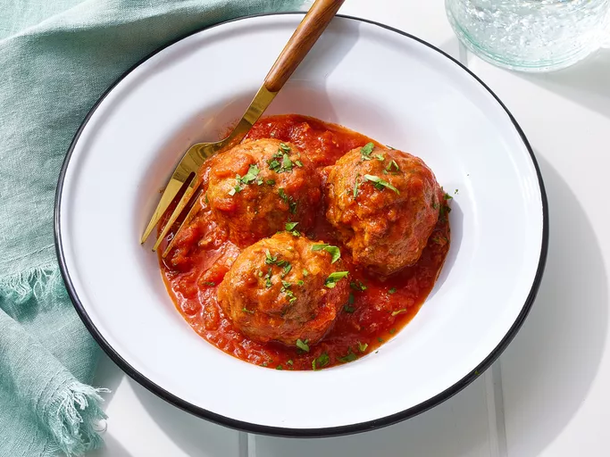

Boulettes à la sauce tomate

Description
Ces boulettes à la sauce tomate peuvent être accompagnées de riz, pommes de terre ou frites.
Servez avec une salade afin d'équilibrer.
Ingredients
- Viande hâchée
- Passata de tomate
- Persil
- Oignons
- Concentré de tomate
Etapes
- Dans une grande poêle, faites chauffer le concentré de tomate et la passata.
- Coupez les oignons et l'ail le plus finement possible.
- Faites autant de boulettes que souhaité avec la viande hâchée.
- Faites cuire les boulettes dans la poêle et saupoudrez de persil.
- Une fois la cuisson souhaitée atteinte, servir.